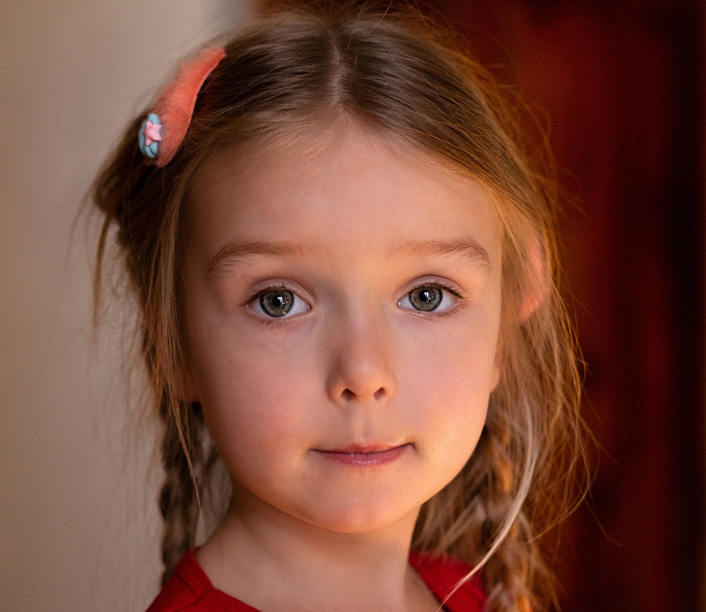

Despre Elena
Elena este o fetiță de 12 ani care locuiește în orașul Brașov. Este o elevă foarte sârguincioasă, cunoscută pentru energia ei pozitivă și curiozitatea cu care explorează lumea.
Unde învață?
Elena studiază la Școala Gimnazială „Avram Iancu” din Brașov. Materia ei preferată este biologia, deoarece iubește să învețe despre natură și animalele din întreaga lume.
Ce face în timpul liber?
- Pictează: Elena adoră să picteze peisaje și portrete. Tablourile ei sunt pline de culoare și imaginație.
- Citește: Este pasionată de cărți de aventură, iar seria ei preferată este „Harry Potter”.
- Joacă volei: Elena face parte din echipa școlii și participă la competiții locale.
- Plimbări în natură: În weekenduri, merge cu familia ei la munte pentru drumeții.
Visurile Elenei
Elena visează să devină medic veterinar, astfel încât să îngrijească animalele și să le ajute să fie sănătoase și fericite.